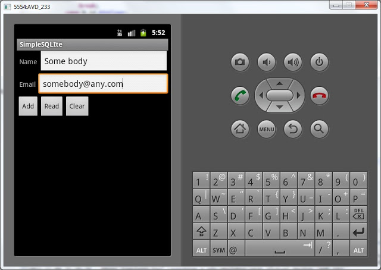

В этом уроке:
- хранение данных с помощью SQLite
На прошлом уроке мы рассмотрели самый простой способ хранения данных - Preferences. Но способ этот достаточно ограничен и для хранения большого количества структурированных данных неудобен. На этом уроке рассмотрим SQLite. Это база данных с таблицами и запросами - все как в обычных БД.
Для начала, немного теории по взаимодействию приложения и БД.
В приложении, при подключении к БД мы указываем имя БД и версию. При этом могут возникнуть следующие ситуации:
1) БД не существует. Это может быть например в случае первичной установки программы. В этом случае приложение должно само создать БД и все таблицы в ней. И далее оно уже работает с только что созданной БД.
2) БД существует, но ее версия устарела. Это может быть в случае обновления программы. Например новой версии программы нужны дополнительные поля в старых таблицах или новые таблицы. В этом случае приложение должно апдейтить существующие таблицы и создать новые, если это необходимо.
3) БД существует и ее версия актуальна. В этом случае приложение успешно подключается к БД и работает.
Как вы понимаете, фраза "приложение должно" равнозначна фразе "разработчик должен", т.е. это наша задача. Для обработки описанных выше ситуаций нам надо создать класс, являющийся наследником для SQLiteOpenHelper. Назовем его DBHelper. Этот класс предоставит нам методы для создания или обновления БД в случаях ее отсутствия или устаревания.
onCreate - метод, который будет вызван, если БД, к которой мы хотим подключиться – не существует
onUpgrade - будет вызван в случае, если мы пытаемся подключиться к БД более новой версии, чем существующая
Давайте накидаем простое приложение – справочник контактов, которое будет хранить имя и email. Вводить данные будем на экране приложения, а для отображения информации используем логи. Обычно для этого используется List (список) – но мы эту тему пока не знаем. Да и не хочется перегружать приложение. Главное – освоить приемы работы с БД.
Создадим проект:
Project name: P0341_SimpleSQLite
Build Target: Android 4.0
Application name: SimpleSQLite
Package name: ru.startandroid.develop.p0341simplesqlite
Create Activity: MainActivity
Нарисуем экран для ввода записей и очистки таблицы. Открываем main.xml и пишем:
<?xml version="1.0" encoding="utf-8"?>
<LinearLayout
xmlns:android="http://schemas.android.com/apk/res/android"
android:layout_width="fill_parent"
android:layout_height="fill_parent"
android:orientation="vertical">
<LinearLayout
android:id="@+id/linearLayout1"
android:layout_width="match_parent"
android:layout_height="wrap_content">
<TextView
android:layout_width="wrap_content"
android:layout_height="wrap_content"
android:text="Name"
android:layout_marginLeft="5dp"
android:layout_marginRight="5dp">
</TextView>
<EditText
android:id="@+id/etName"
android:layout_width="wrap_content"
android:layout_height="wrap_content"
android:layout_weight="1">
<requestFocus>
</requestFocus>
</EditText>
</LinearLayout>
<LinearLayout
android:id="@+id/linearLayout3"
android:layout_width="match_parent"
android:layout_height="wrap_content">
<TextView
android:id="@+id/textView2"
android:layout_width="wrap_content"
android:layout_height="wrap_content"
android:text="Email"
android:layout_marginLeft="5dp"
android:layout_marginRight="5dp">
</TextView>
<EditText
android:id="@+id/etEmail"
android:layout_width="wrap_content"
android:layout_height="wrap_content"
android:layout_weight="1">
</EditText>
</LinearLayout>
<LinearLayout
android:id="@+id/linearLayout2"
android:layout_width="match_parent"
android:layout_height="wrap_content">
<Button
android:id="@+id/btnAdd"
android:layout_width="wrap_content"
android:layout_height="wrap_content"
android:text="Add">
</Button>
<Button
android:id="@+id/btnRead"
android:layout_width="wrap_content"
android:layout_height="wrap_content"
android:text="Read">
</Button>
<Button
android:id="@+id/btnClear"
android:layout_width="wrap_content"
android:layout_height="wrap_content"
android:text="Clear">
</Button>
</LinearLayout>
</LinearLayout>Пара полей для ввода и кнопки добавления записи, вывода существующих записей и очистки таблицы.
Открываем MainActivity.java и пишем:
package ru.startandroid.develop.p0341simplesqlite;
import android.app.Activity;
import android.content.ContentValues;
import android.content.Context;
import android.database.Cursor;
import android.database.sqlite.SQLiteDatabase;
import android.database.sqlite.SQLiteOpenHelper;
import android.os.Bundle;
import android.util.Log;
import android.view.View;
import android.view.View.OnClickListener;
import android.widget.Button;
import android.widget.EditText;
public class MainActivity extends Activity implements OnClickListener {
final String LOG_TAG = "myLogs";
Button btnAdd, btnRead, btnClear;
EditText etName, etEmail;
DBHelper dbHelper;
/** Called when the activity is first created. */
@Override
public void onCreate(Bundle savedInstanceState) {
super.onCreate(savedInstanceState);
setContentView(R.layout.main);
btnAdd = (Button) findViewById(R.id.btnAdd);
btnAdd.setOnClickListener(this);
btnRead = (Button) findViewById(R.id.btnRead);
btnRead.setOnClickListener(this);
btnClear = (Button) findViewById(R.id.btnClear);
btnClear.setOnClickListener(this);
etName = (EditText) findViewById(R.id.etName);
etEmail = (EditText) findViewById(R.id.etEmail);
// создаем объект для создания и управления версиями БД
dbHelper = new DBHelper(this);
}
@Override
public void onClick(View v) {
// создаем объект для данных
ContentValues cv = new ContentValues();
// получаем данные из полей ввода
String name = etName.getText().toString();
String email = etEmail.getText().toString();
// подключаемся к БД
SQLiteDatabase db = dbHelper.getWritableDatabase();
switch (v.getId()) {
case R.id.btnAdd:
Log.d(LOG_TAG, "--- Insert in mytable: ---");
// подготовим данные для вставки в виде пар: наименование столбца - значение
cv.put("name", name);
cv.put("email", email);
// вставляем запись и получаем ее ID
long rowID = db.insert("mytable", null, cv);
Log.d(LOG_TAG, "row inserted, ID = " + rowID);
break;
case R.id.btnRead:
Log.d(LOG_TAG, "--- Rows in mytable: ---");
// делаем запрос всех данных из таблицы mytable, получаем Cursor
Cursor c = db.query("mytable", null, null, null, null, null, null);
// ставим позицию курсора на первую строку выборки
// если в выборке нет строк, вернется false
if (c.moveToFirst()) {
// определяем номера столбцов по имени в выборке
int idColIndex = c.getColumnIndex("id");
int nameColIndex = c.getColumnIndex("name");
int emailColIndex = c.getColumnIndex("email");
do {
// получаем значения по номерам столбцов и пишем все в лог
Log.d(LOG_TAG,
"ID = " + c.getInt(idColIndex) +
", name = " + c.getString(nameColIndex) +
", email = " + c.getString(emailColIndex));
// переход на следующую строку
// а если следующей нет (текущая - последняя), то false - выходим из цикла
} while (c.moveToNext());
} else
Log.d(LOG_TAG, "0 rows");
c.close();
break;
case R.id.btnClear:
Log.d(LOG_TAG, "--- Clear mytable: ---");
// удаляем все записи
int clearCount = db.delete("mytable", null, null);
Log.d(LOG_TAG, "deleted rows count = " + clearCount);
break;
}
// закрываем подключение к БД
dbHelper.close();
}
class DBHelper extends SQLiteOpenHelper {
public DBHelper(Context context) {
// конструктор суперкласса
super(context, "myDB", null, 1);
}
@Override
public void onCreate(SQLiteDatabase db) {
Log.d(LOG_TAG, "--- onCreate database ---");
// создаем таблицу с полями
db.execSQL("create table mytable ("
+ "id integer primary key autoincrement,"
+ "name text,"
+ "email text" + ");");
}
@Override
public void onUpgrade(SQLiteDatabase db, int oldVersion, int newVersion) {
}
}
}Куча новых незнакомых слов в коде. Давайте разбираться.
В методе Activity - onCreate мы определяем объекты, присваиваем обработчики и создаем объект dbHelper класса DBHelper для управления БД. Сам класс будет описан ниже.
Далее смотрим метод Activity – onClick, в котором мы обрабатываем нажатия на кнопки.
Класс ContentValues используется для указания полей таблицы и значений, которые мы в эти поля будем вставлять. Мы создаем объект cv, и позже его используем. Далее мы записываем в переменные значения из полей ввода. Затем, с помощью метода getWritableDatabase подключаемся к БД и получаем объект SQLiteDatabase. Он позволит нам работать с БД. Мы будем использовать его методы insert – вставка записи, query – чтение, delete – удаление. У них много разных параметров на вход, но мы пока используем самый минимум.
Далее смотрим, какая кнопка была нажата:
btnAdd – добавление записи в таблицу mytable. Мы заполняем объект cv парами: имя поля и значение. И (при вставке записи в таблицу) в указанные поля будут вставлены соответствующие значения. Мы заполняем поля name и email. id у нас заполнится автоматически (primary key autoincrement). Вызываем метод insert – передаем ему имя таблицы и объект cv с вставляемыми значениями. Второй аргумент метода используется, при вставке в таблицу пустой строки. Нам это сейчас не нужно, поэтому передаем null. Метод insert возвращает ID вставленной строки, мы его сохраняем в rowID и выводим в лог.
btnRead – чтение всех записей из таблицы mytable. Для чтения используется метод query. На вход ему подается имя таблицы, список запрашиваемых полей, условия выборки, группировка, сортировка. Т.к. нам нужны все данные во всех полях без сортировок и группировок - мы используем везде null. Только имя таблицы указываем. Метод возвращает нам объект класса Cursor. Его можно рассматривать как таблицу с данными. Метод moveToFirst – делает первую запись в Cursor активной и заодно проверяет, есть ли вообще записи в нем (т.е. выбралось ли что-либо в методе query). Далее мы получаем порядковые номера столбцов в Cursor по их именам с помощью метода getColumnIndex. Эти номера потом используем для чтения данных в методах getInt и getString и выводим данные в лог. С помощью метода moveToNext мы перебираем все строки в Cursor пока не добираемся до последней. Если же записей не было, то выводим в лог соответствующее сообщение – 0 rows. В конце закрываем курсор (освобождаем занимаемые им ресурсы) методом close, т.к. далее мы его нигде не используем.
btnClear – очистка таблицы. Метод delete удаляет записи. На вход передаем имя таблицы и null в качестве условий для удаления, а значит удалится все. Метод возвращает кол-во удаленных записей.
После этого закрываем соединение с БД методом close.
Класс DBHelper является вложенным в MainActivity и описан в конце кода. Как я уже писал выше, этот класс должен наследовать класс SQLiteOpenHelper.
В конструкторе мы вызываем конструктор суперкласса и передаем ему:
context - контекст
mydb - название базы данных
null – объект для работы с курсорами, нам пока не нужен, поэтому null
1 – версия базы данных
В методе onCreate этого класса мы используем метод execSQL объекта SQLiteDatabase для выполнения SQL-запроса, который создает таблицу. Напомню – этот метод вызывается, если БД не существует и ее надо создавать. По запросу видно, что мы создаем таблицу mytable с полями id, name и email.
Метод onUpgrade пока не заполняем, т.к. используем одну версию БД и менять ее не планируем.
Все сохраним и запустим приложение. Будем работать с БД и смотреть логи, которые покажут, какие методы выполняются, и что в них происходит.
Введем чего-нить в поля ввода и нажмем Add.
Смотрим лог:
--- onCreate database ---
--- Insert in mytable: ---
row inserted, ID = 1
Мы видим, что вызывался метод onCreate в классе DBHelper, а значит выполнялся скрипт по созданию таблицы. Это произошло потому, что это первый запуск приложения и БД еще не была создана. Теперь БД существует и с ней можно работать.
Далее видим, что вызывался метод вставки записи и вернул ID = 1.
Вставим еще какую-нибудь запись.

Смотрим лог:
--- Insert in mytable: ---
row inserted, ID = 2
На этот раз onCreate не вызывался, т.к. БД уже существует. Вставилась запись с ID = 2.
Давайте посмотрим содержимое таблицы - нажмем кнопку Read и посмотрим лог:
--- Rows in mytable: ---
ID = 1, name = John Smith, email = Этот адрес электронной почты защищён от спам-ботов. У вас должен быть включен JavaScript для просмотра.
ID = 2, name = Some body, email = Этот адрес электронной почты защищён от спам-ботов. У вас должен быть включен JavaScript для просмотра.
Мы видим записи, которые вставляли. Тут все верно.
Теперь очистим таблицу - нажмем Clear. Смотрим лог:
--- Clear mytable: ---
deleted rows count = 2
Удалено две записи, все верно. Если теперь посмотрим содержимое таблицы – кнопка Read:
--- Rows in mytable: ---
0 rows
Записей нет.
В этой теме важно понять, что для работы с БД мы использовали два класса:
- DBHelper, наследующий SQLiteOpenHelper. В его конструкторе мы вызываем конструктор супер-класса и указываем имя и версию БД. Метод getWritableDatabase выполняет подключение к базе данных и возвращает нам объект SQLiteDatabase для работы с ней. Метод close закрывает подключение к БД. В случае, когда БД отсутствует или устарела, класс предоставляет нам самим реализовать создание или обновление в методах onCreate и onUpgrate.
- SQLiteDatabase. Содержит методы для работы с данными – т.е. вставка, обновление, удаление и чтение.
Файл базы можно найти в File Explorer, как и на прошлом уроке. Путь к нему data/data/ru.startandroid.develop.p0341simpelsqlite/databases/myDB.
На следующем уроке продолжим это приложение. Добавим возможность обновления и удаления конкретных записей.
Важное замечание
Я в своих примерах выполняю все операции с базой данных в основном потоке. Я делаю так, чтобы не усложнять урок. Но в реале вам следует использовать для работы с БД отдельный поток, чтобы ваше приложение не тормозило визуально. О том, как это сделать, я пишу в уроках 80-91 и 135-136.